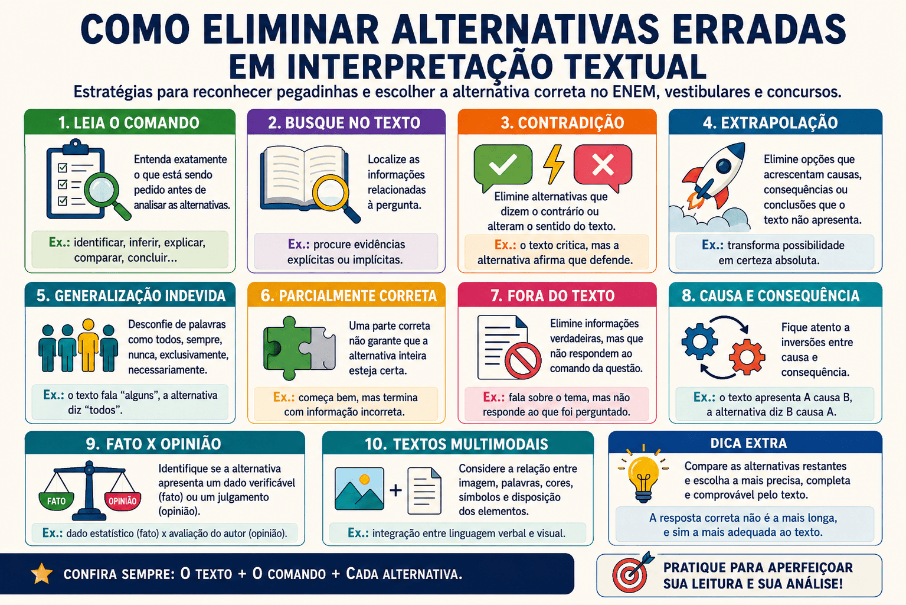

Como eliminar alternativas erradas em interpretação textual: estratégias para ENEM, vestibulares e concursos
Saber eliminar alternativas erradas em interpretação textual é uma das habilidades mais importantes para quem se prepara para o ENEM, vestibulares e concursos públicos. Em muitas questões, o candidato compreende o texto, mas ainda encontra dificuldade para escolher entre duas opções aparentemente corretas.
Isso acontece porque as bancas costumam elaborar alternativas com informações verdadeiras, palavras retiradas do texto e afirmações aparentemente coerentes. Entretanto, uma alternativa pode apresentar uma interpretação exagerada, incompleta, contraditória ou diferente daquilo que o texto realmente permite concluir.
Neste conteúdo, você aprenderá a reconhecer as principais armadilhas das questões de interpretação, identificar alternativas incompatíveis com o texto e aplicar um método seguro de eliminação. Ao final, poderá responder a um quiz avançado com questões voltadas para o ENEM, vestibulares e concursos.

Por que algumas alternativas parecem corretas?
Em questões de interpretação, as alternativas erradas raramente são completamente absurdas. Muitas delas contêm parte da resposta correta, repetem palavras do texto ou apresentam uma afirmação verdadeira sobre o tema abordado.
O problema é que uma alternativa não deve ser avaliada apenas pela presença de palavras conhecidas. É necessário verificar se ela responde exatamente ao que foi perguntado e se sua afirmação está integralmente sustentada pelo texto.
Uma alternativa pode parecer correta porque:
- repete palavras ou expressões presentes no texto;
- apresenta uma informação verdadeira, mas não responde ao comando;
- mistura uma afirmação correta com outra incorreta;
- faz uma generalização a partir de um caso específico;
- acrescenta informações que o texto não apresenta;
- expressa uma opinião comum, mas não a perspectiva do autor;
- inverte uma relação de causa e consequência;
- confunde tema, tese, argumento e exemplo.
Palavras iguais não garantem resposta correta
Uma alternativa pode copiar expressões do texto e, mesmo assim, alterar a relação existente entre elas. Por outro lado, a alternativa correta pode utilizar palavras diferentes para apresentar uma paráfrase fiel ao sentido original.
O que significa eliminar uma alternativa?
Eliminar uma alternativa significa demonstrar que ela não pode ser a resposta correta porque apresenta algum problema de interpretação. Esse problema pode estar no conteúdo, na abrangência, na relação lógica ou na adequação ao comando da questão.
A eliminação não deve ser baseada apenas em impressão pessoal. O candidato precisa localizar uma evidência concreta que torne a alternativa incompatível com o texto.
Eliminação insegura
“Essa alternativa parece estranha.”
“Acho que a banca não colocaria isso.”
“Essa opção está muito longa.”
Eliminação fundamentada
“A alternativa generaliza uma afirmação restrita.”
“A opção contradiz a conclusão do segundo parágrafo.”
“O texto não permite afirmar que essa foi a causa do problema.”
Leia primeiro o comando da questão
Antes de analisar as alternativas, é fundamental compreender o que a questão solicita. Muitas respostas erradas apresentam informações relacionadas ao texto, mas não atendem ao comando.
O candidato deve observar o verbo utilizado no enunciado, pois ele indica a operação de leitura necessária.
| Comando | O que a questão exige |
|---|---|
| Identificar | Localizar uma informação ou característica presente no texto. |
| Inferir | Concluir algo com base em pistas textuais. |
| Explicar | Apresentar a causa, o sentido ou o funcionamento de determinado elemento. |
| Comparar | Reconhecer semelhanças e diferenças entre elementos. |
| Relacionar | Estabelecer uma conexão entre ideias, textos ou recursos expressivos. |
| Concluir | Reconhecer uma ideia decorrente do conjunto das informações. |
| Justificar | Apontar a razão que sustenta uma afirmação. |
| Reconhecer o efeito de sentido | Compreender o resultado produzido por uma escolha linguística ou visual. |
Transforme o comando em uma pergunta direta
Antes de avaliar as opções, reformule mentalmente o enunciado. Por exemplo, se a questão pergunta qual efeito é produzido por uma expressão, pense: “O que essa expressão provoca no sentido do texto?”
Alternativa que contradiz o texto
A contradição é uma das formas mais fáceis de eliminar uma alternativa. Ela ocorre quando a opção afirma o contrário do que o texto apresenta.
Texto: A tecnologia pode ampliar o acesso à informação, mas não garante, sozinha, uma educação de qualidade.
Alternativa: O texto defende que o uso da tecnologia assegura automaticamente a qualidade da educação.
Análise: A alternativa é incorreta porque transforma uma possibilidade em garantia. O texto afirma exatamente que a tecnologia, isoladamente, não assegura qualidade.
Sinais de contradição
- o texto afirma uma possibilidade e a alternativa apresenta uma certeza;
- o texto critica uma ideia e a alternativa afirma que ele a defende;
- o texto restringe uma afirmação e a alternativa a amplia;
- o texto apresenta uma causa e a alternativa atribui outra;
- o texto demonstra dúvida e a alternativa indica convicção absoluta.
Alternativa parcialmente correta
Uma das armadilhas mais frequentes é a alternativa que começa corretamente, mas termina com uma afirmação incorreta. Nesse caso, a presença de uma informação verdadeira não torna toda a opção correta.
Texto: A leitura frequente pode ampliar o vocabulário e favorecer a compreensão de diferentes formas de expressão.
Alternativa: A leitura amplia o vocabulário e elimina completamente as dificuldades de interpretação.
Análise: A primeira parte está de acordo com o texto. Entretanto, a afirmação de que a leitura elimina completamente as dificuldades não é sustentada pelo fragmento.
A alternativa deve estar totalmente correta
Em uma questão objetiva, não existe alternativa “quase correta”. Se uma parte relevante da opção contradiz, exagera ou ultrapassa o texto, ela deve ser eliminada.
Alternativa verdadeira, mas fora do texto
Algumas opções apresentam informações que podem ser verdadeiras no mundo real, mas que não são mencionadas, sugeridas ou autorizadas pelo texto.
Esse tipo de alternativa costuma confundir candidatos que utilizam seus conhecimentos prévios sem observar os limites da questão.
Texto: O transporte coletivo reduz o número de veículos particulares em circulação quando oferece segurança, regularidade e conforto.
Alternativa: A produção de automóveis é uma das principais atividades da economia brasileira.
Análise: A afirmação pode ser discutida em outros contextos, mas não responde ao conteúdo apresentado no texto.
Pergunta de controle
Ao ler uma alternativa, pergunte: “Consigo provar essa afirmação usando apenas o texto e o comando da questão?”
Alternativa que extrapola o texto
A extrapolação ocorre quando a alternativa ultrapassa aquilo que o texto permite concluir. Ela geralmente acrescenta consequências, intenções, causas ou avaliações que não aparecem no material analisado.
Texto
O trabalho remoto pode reduzir o tempo gasto em deslocamentos.
Extrapolação
O trabalho remoto acabará definitivamente com os problemas de mobilidade urbana.
O texto apresenta uma possibilidade limitada: reduzir o tempo de deslocamento. A alternativa amplia essa ideia e afirma que todos os problemas de mobilidade serão definitivamente solucionados.
Alternativa com generalização indevida
A generalização indevida acontece quando a alternativa transforma uma afirmação parcial, específica ou condicionada em uma regra absoluta.
| Expressão do texto | Generalização problemática |
|---|---|
| Alguns estudantes | Todos os estudantes |
| Pode contribuir | É sempre responsável |
| Em determinadas situações | Em qualquer situação |
| Frequentemente | Obrigatoriamente |
| Uma das causas | A única causa |
| Tende a ocorrer | Ocorre necessariamente |
Observe os quantificadores
Palavras como todos, nenhum, sempre, nunca, exclusivamente e somente tornam a afirmação mais abrangente. Elas não indicam automaticamente erro, mas exigem comprovação clara no texto.
Alternativa que reduz excessivamente o sentido
O problema também pode ocorrer no sentido contrário. Algumas opções restringem uma ideia ampla do texto a apenas um de seus aspectos.
Texto: A obra discute desigualdade social, exclusão educacional, violência simbólica e ausência de oportunidades.
Alternativa: O texto trata exclusivamente da violência física.
Análise: Além de alterar o tipo de violência mencionado, a alternativa reduz vários temas a apenas um.
Alternativa que confunde tema e tese
O tema é o assunto geral do texto. A tese é o posicionamento defendido pelo autor sobre esse assunto.
Tema
Uso das redes sociais por adolescentes.
Tese
A educação digital deve integrar a formação escolar dos adolescentes.
Uma alternativa pode mencionar corretamente o assunto, mas errar ao apresentar o ponto de vista defendido. Por isso, questões sobre tese exigem mais do que a identificação do tema.
Como reconhecer a tese
Pergunte: “O que o autor pretende que o leitor aceite ou compreenda sobre esse tema?”
Alternativa que confunde argumento e exemplo
O argumento sustenta uma ideia. O exemplo ilustra ou concretiza esse argumento. As bancas podem apresentar um caso específico como se ele fosse a ideia principal do texto.
Argumento: A desigualdade no acesso à tecnologia compromete a inclusão digital.
Exemplo: Estudantes sem internet enfrentam dificuldades para acompanhar atividades on-line.
Armadilha: Afirmar que o objetivo central do texto é apenas descrever a rotina desses estudantes.
Alternativa que inverte causa e consequência
Em textos argumentativos, científicos e jornalísticos, é comum haver relações de causa e consequência. Uma alternativa errada pode inverter essa relação.
Relação apresentada
A ausência de saneamento contribui para o aumento de determinadas doenças.
Relação invertida
O aumento das doenças provoca necessariamente a ausência de saneamento.
Conectivos que ajudam a reconhecer relações lógicas
- Causa: porque, devido a, uma vez que, visto que.
- Consequência: por isso, portanto, de modo que, consequentemente.
- Oposição: mas, porém, contudo, entretanto.
- Concessão: embora, ainda que, apesar de.
- Condição: se, caso, desde que.
- Conclusão: logo, portanto, assim, desse modo.
Alternativa que ignora uma condição
Muitas afirmações do texto dependem de uma condição. A alternativa errada pode retirar essa condição e transformar a ideia em uma declaração absoluta.
Texto: A atividade física pode melhorar a qualidade de vida quando é praticada regularmente e acompanhada de hábitos saudáveis.
Alternativa: Qualquer atividade física, independentemente da frequência e dos hábitos pessoais, garante qualidade de vida.
Análise: A alternativa elimina as condições apresentadas pelo texto e transforma possibilidade em garantia.
Alternativa que atribui ao autor uma opinião de outra pessoa
Textos podem apresentar diferentes vozes: a do autor, a de especialistas, a de personagens, a de instituições ou a de grupos sociais. Uma alternativa pode atribuir ao autor uma posição que ele apenas citou ou criticou.
Identifique quem está falando
Observe verbos como afirma, defende, argumenta, critica, contesta e segundo. Eles ajudam a separar a voz do autor das ideias citadas.
Trecho: Alguns afirmam que a leitura perderá espaço na era digital. Essa previsão, entretanto, ignora o surgimento de novas formas de leitura.
Alternativa incorreta: O autor defende que a leitura desaparecerá na era digital.
Análise: O autor apresenta essa previsão para contestá-la, não para defendê-la.
Alternativa que confunde fato e opinião
O fato apresenta uma informação verificável. A opinião manifesta uma avaliação, julgamento ou posicionamento.
| Tipo | Exemplo | Característica |
|---|---|---|
| Fato | A biblioteca foi inaugurada em 2010. | A informação pode ser verificada. |
| Opinião | A biblioteca é o espaço mais importante da cidade. | A afirmação apresenta uma avaliação. |
| Fato interpretado | O aumento de visitantes demonstra a relevância da biblioteca. | Um dado é utilizado para sustentar uma interpretação. |
Alternativa que interpreta literalmente uma linguagem figurada
Textos literários, publicitários, humorísticos e jornalísticos podem utilizar metáfora, ironia, hipérbole, personificação e outras figuras de linguagem. Uma alternativa errada pode interpretar literalmente uma expressão figurada.
Trecho: A cidade acordou sufocada pela fumaça.
Leitura inadequada: A cidade é apresentada como um ser humano que perdeu completamente a capacidade de respirar.
Leitura adequada: A personificação intensifica a representação da poluição e de seus efeitos sobre a população.
Alternativa que não considera a ironia
Na ironia, o sentido pretendido pode ser diferente ou contrário ao sentido literal das palavras. Para reconhecê-la, é necessário considerar o contexto, o tom e a incompatibilidade entre o que é dito e a situação apresentada.
Situação: Após esperar três horas por um atendimento, uma pessoa afirma: “Que serviço rápido e eficiente!”
Análise: A fala não elogia o serviço. Ela critica a demora por meio de uma afirmação ironicamente positiva.
Teste da incompatibilidade
Quando uma frase parece não combinar com a situação, verifique se há ironia. A oposição entre as palavras e o contexto costuma produzir humor ou crítica.
Alternativa que desconsidera uma palavra decisiva
Uma única palavra pode mudar completamente o sentido de uma alternativa. É comum o candidato concentrar-se nas ideias gerais e não perceber termos que tornam a opção incorreta.
| Palavra ou expressão | Efeito na alternativa |
|---|---|
| Apenas | Restringe a afirmação. |
| Sempre | Transforma a ideia em regra absoluta. |
| Necessariamente | Elimina outras possibilidades. |
| Principalmente | Indica predominância, mas não exclusividade. |
| Pode | Expressa possibilidade. |
| Deve | Pode indicar obrigação, recomendação ou probabilidade. |
| Exclusivamente | Exclui outras causas, funções ou interpretações. |
| Parcialmente | Limita o alcance da afirmação. |
Alternativa que apresenta julgamento exagerado
Algumas alternativas utilizam palavras muito fortes para representar uma crítica moderada, uma dúvida ou uma observação parcial do autor.
Texto
O autor questiona a eficiência de determinadas políticas públicas.
Alternativa exagerada
O autor condena completamente todas as políticas públicas existentes.
Os verbos questionar e condenar completamente não apresentam a mesma intensidade. Além disso, a alternativa amplia “determinadas políticas” para “todas as políticas”.
Alternativa incompatível com o gênero textual
Conhecer o gênero ajuda a compreender a finalidade do texto. Uma alternativa pode atribuir ao texto uma função que não corresponde à sua estrutura ou ao seu propósito.
| Gênero | Finalidades frequentes |
|---|---|
| Notícia | Informar sobre um acontecimento de interesse público. |
| Artigo de opinião | Defender um ponto de vista por meio de argumentos. |
| Editorial | Expressar o posicionamento institucional de um veículo. |
| Propaganda | Persuadir o público a adotar uma ideia ou comportamento. |
| Charge | Criticar um acontecimento por meio de humor e elementos visuais. |
| Tirinha | Construir humor, crítica ou reflexão por meio de uma sequência. |
| Crônica | Refletir sobre situações cotidianas, frequentemente com subjetividade. |
| Texto científico | Apresentar, explicar ou discutir conhecimentos de forma sistematizada. |
Alternativas em questões com textos multimodais
Textos multimodais combinam linguagem verbal, imagens, cores, símbolos, gráficos, disposição espacial e outros recursos. Para eliminar alternativas erradas, é necessário interpretar a relação entre esses elementos.
O que observar em textos multimodais
- a relação entre título e imagem;
- o tamanho e a posição dos elementos;
- as expressões faciais e os gestos das personagens;
- o contraste entre linguagem verbal e visual;
- o público-alvo da mensagem;
- o efeito produzido pelas cores e pelos símbolos;
- as informações destacadas ou omitidas;
- a presença de humor, ironia ou crítica social.
Não interprete os elementos isoladamente
Em uma charge, propaganda ou tirinha, o sentido geralmente resulta da integração entre imagem e palavras. Uma alternativa que considera apenas um desses elementos pode apresentar uma interpretação incompleta.
Como lidar com duas alternativas aparentemente corretas?
Quando duas opções parecem adequadas, o candidato deve compará-las de maneira detalhada. Em geral, uma delas apresenta um problema de precisão, abrangência ou adequação ao comando.
Critérios de desempate
- Verifique qual alternativa responde diretamente ao comando.
- Compare cada palavra das opções com o sentido do texto.
- Identifique qual delas exige menos suposições externas.
- Observe se uma opção exagera ou restringe a ideia.
- Analise se há troca entre causa, consequência, exemplo e conclusão.
- Escolha a alternativa sustentada pelo conjunto do texto.
A resposta mais precisa é preferível
Entre duas alternativas próximas, a correta costuma apresentar maior precisão e depender menos de interpretações pessoais. Ela deve explicar o texto sem acrescentar, omitir ou distorcer informações importantes.
Não escolha a alternativa apenas porque ela é maior
O tamanho de uma alternativa não determina sua correção. Uma opção longa pode apresentar detalhes precisos ou esconder uma informação incorreta. Uma opção curta pode sintetizar adequadamente o sentido ou ser vaga demais.
Critério inadequado
Escolher a alternativa mais longa porque parece mais completa.
Critério adequado
Verificar se todas as partes da alternativa são compatíveis com o texto.
Não elimine uma alternativa apenas por possuir palavras fortes
Termos como sempre, nunca e exclusivamente devem ser analisados com atenção, mas não tornam a alternativa automaticamente errada.
Se o texto apresenta uma afirmação absoluta, a alternativa também pode fazê-lo. O importante é verificar se a intensidade e a abrangência são sustentadas.
Texto: Nenhuma forma de discriminação pode ser considerada aceitável.
Alternativa: O texto rejeita todas as formas de discriminação.
Análise: Apesar da abrangência, a alternativa está de acordo com a afirmação absoluta do texto.
Use a técnica da comprovação textual
Para cada alternativa, tente localizar no texto uma passagem que confirme ou negue a afirmação. Essa técnica reduz a influência de opiniões pessoais e melhora a precisão da resposta.
Três classificações possíveis
- Confirmada: o texto apresenta evidências suficientes para sustentar a alternativa.
- Contradita: o texto apresenta uma ideia incompatível com a alternativa.
- Não comprovada: a alternativa acrescenta algo que não pode ser demonstrado pelo texto.
Use a técnica da substituição
Quando a questão aborda o significado de uma palavra ou expressão, substitua o termo por uma opção de sentido semelhante e releia a passagem.
Trecho: O autor apresenta uma visão cautelosa sobre os avanços tecnológicos.
Substituição possível: O autor apresenta uma visão prudente sobre os avanços tecnológicos.
Substituição inadequada: O autor apresenta uma visão entusiasmada e irrestrita sobre os avanços tecnológicos.
Use a técnica da negação
Em algumas situações, negar a alternativa ajuda a perceber se ela corresponde ao texto. Essa estratégia é especialmente útil em questões sobre tese, conclusão e relações lógicas.
Alternativa: O texto defende que a participação social é necessária para fortalecer a democracia.
Negação: O texto não considera necessária a participação social para fortalecer a democracia.
Ao comparar as duas versões com o texto, torna-se mais fácil reconhecer qual delas representa o posicionamento do autor.
Use a técnica da palavra decisiva
Em vez de reler toda a alternativa de maneira genérica, procure a palavra que define sua correção ou incorreção.
Alternativa: O texto atribui exclusivamente ao avanço tecnológico as mudanças nas relações profissionais.
A palavra exclusivamente exige que o texto apresente a tecnologia como única causa. Se outras causas forem mencionadas, a alternativa deve ser eliminada.
Use a técnica do núcleo da alternativa
Alternativas longas podem ser reduzidas mentalmente à sua afirmação principal. Depois de identificar esse núcleo, verifique se ele corresponde ao texto.
Alternativa completa: Ao apresentar dados sobre o crescimento da leitura digital, o autor demonstra que os livros impressos perderam toda a relevância cultural.
Núcleo: Os livros impressos perderam toda a relevância cultural.
Se essa ideia não estiver sustentada, a alternativa é incorreta, ainda que a primeira parte mencione corretamente os dados apresentados.
Método passo a passo para eliminar alternativas
Roteiro de resolução
- Leia o comando e identifique exatamente o que está sendo solicitado.
- Localize no texto a passagem relacionada à pergunta.
- Formule mentalmente uma resposta antes de analisar as opções.
- Leia cada alternativa por inteiro.
- Sublinhe mentalmente palavras decisivas.
- Elimine as opções contraditórias.
- Elimine as alternativas que extrapolam ou generalizam.
- Elimine as opções verdadeiras, mas não relacionadas ao comando.
- Compare detalhadamente as alternativas restantes.
- Escolha a opção mais precisa e comprovável pelo texto.
Principais armadilhas em questões do ENEM
No ENEM, as questões costumam exigir a compreensão da finalidade do texto, dos efeitos de sentido, das relações entre linguagens e das práticas sociais envolvidas.
- alternativa que apenas descreve a imagem, sem explicar seu efeito;
- opção que identifica o tema, mas não a finalidade comunicativa;
- alternativa que ignora o contexto social de circulação do texto;
- opção que interpreta literalmente uma metáfora ou ironia;
- alternativa que menciona um recurso linguístico correto, mas explica incorretamente sua função;
- opção que considera apenas o texto verbal e ignora a imagem;
- alternativa baseada em conhecimento externo, sem apoio no material apresentado.
No ENEM, observe a função social
Pergunte quem produziu o texto, para qual público, em qual contexto e com qual finalidade. Essas informações frequentemente determinam a resposta.
Principais armadilhas em vestibulares
Os vestibulares podem cobrar leitura detalhada, análise literária, relações semânticas, compreensão de recursos expressivos e comparação entre textos.
- confusão entre narrador e autor;
- atribuição ao eu lírico de características do escritor;
- interpretação literal de imagens poéticas;
- generalização a partir de um fragmento;
- desconsideração do contexto histórico ou literário apresentado;
- confusão entre característica estética e tema da obra;
- alternativa parcialmente correta com conclusão inadequada.
Principais armadilhas em concursos públicos
Nos concursos, as questões costumam explorar inferência, reescrita, valor semântico de conectivos, referência pronominal, pressupostos, implícitos e manutenção do sentido.
- reescrita gramaticalmente correta, mas com sentido alterado;
- substituição de conectivo que modifica a relação lógica;
- troca entre possibilidade e certeza;
- confusão entre informação explícita e inferência;
- identificação incorreta do referente de um pronome;
- atribuição de valor causal a uma expressão conclusiva;
- eliminação de uma condição ou ressalva importante.
Erros que o candidato deve evitar
| Erro | Como corrigir |
|---|---|
| Ler apenas as alternativas | Voltar ao texto e buscar evidências. |
| Escolher pela opinião pessoal | Priorizar o ponto de vista construído no texto. |
| Marcar a primeira opção plausível | Ler todas as alternativas antes de decidir. |
| Ignorar palavras restritivas | Observar termos como apenas, sempre, nunca e exclusivamente. |
| Usar conhecimento externo sem necessidade | Responder com base no texto e no comando. |
| Considerar apenas parte da alternativa | Verificar se toda a opção está correta. |
| Confundir tema e tese | Distinguir o assunto do posicionamento defendido. |
| Ignorar o gênero textual | Relacionar estrutura, finalidade e contexto de circulação. |
Quiz sobre eliminação de alternativas erradas
Quiz — Estratégias de interpretação textual (nível avançado)
Questão 1 — Leia o fragmento:
A presença de recursos digitais nas escolas pode ampliar as possibilidades de aprendizagem. Entretanto, sua utilização precisa estar associada ao planejamento pedagógico e à formação dos professores.
Assinale a alternativa que deve ser eliminada por apresentar uma generalização incompatível com o texto.
Questão 2 — Leia:
Embora as redes sociais facilitem a circulação de informações, também favorecem a divulgação rápida de conteúdos falsos.
Qual alternativa preserva adequadamente a relação construída no período?
Questão 3 — Leia o fragmento:
Para alguns especialistas, a redução da jornada de trabalho pode contribuir para a qualidade de vida, desde que não provoque sobrecarga durante o período trabalhado.
Assinale a alternativa que extrapola o texto.
Questão 4 — Leia:
Muitos defendem que os livros impressos desaparecerão. Essa previsão, porém, ignora a permanência de práticas culturais associadas à leitura em papel.
Qual alternativa atribui incorretamente ao autor uma opinião que ele contesta?
Questão 5 — Leia:
A biblioteca registrou aumento de 30% no número de visitantes. Para a direção, o dado demonstra o interesse crescente da comunidade por atividades culturais.
Sobre fato e opinião, assinale a alternativa correta.
Questão 6 — Leia:
Depois de esperar durante horas, o passageiro comentou: “Realmente, este transporte é um exemplo de pontualidade”.
Assinale a interpretação adequada.
Questão 7 — Leia:
A falta de espaços públicos adequados reduz as oportunidades de convivência e, por isso, pode contribuir para o isolamento social.
Qual alternativa inverte a relação de causa e consequência?
Questão 8 — Leia:
A campanha utiliza a imagem de uma torneira seca ao lado da frase “Cada gota conta”.
Qual alternativa interpreta adequadamente a relação entre linguagem verbal e visual?
Questão 9 — Leia:
A implantação de ciclovias não resolve, isoladamente, todos os problemas de mobilidade, mas pode integrar uma política urbana mais ampla.
Qual alternativa apresenta uma informação parcialmente correta, mas termina com uma afirmação incompatível?
Questão 10 — Analise as afirmações:
I. Uma alternativa pode ser eliminada quando contradiz uma informação explícita do texto.
II. Toda alternativa que utiliza palavras como “sempre” e “nunca” é obrigatoriamente incorreta.
III. Uma afirmação verdadeira no mundo real pode estar errada se não responder ao comando da questão.
IV. Uma alternativa parcialmente correta deve ser aceita quando sua primeira parte estiver de acordo com o texto.
Está correto o que se afirma em:
Resumo: como eliminar alternativas erradas
- Leia atentamente o comando antes de analisar as alternativas.
- Identifique exatamente qual informação ou operação a questão solicita.
- Não escolha uma alternativa apenas porque ela repete palavras do texto.
- Elimine as opções que contradizem informações explícitas.
- Desconfie de generalizações que ampliam afirmações restritas.
- Observe se a alternativa transforma possibilidade em certeza.
- Não aceite opções parcialmente corretas.
- Elimine informações verdadeiras que não respondem ao comando.
- Verifique se a alternativa extrapola as conclusões permitidas.
- Distinga tema, tese, argumento e exemplo.
- Observe relações de causa, consequência, oposição e condição.
- Identifique corretamente quem expressa cada opinião.
- Considere o gênero, a finalidade e o contexto de circulação.
- Em textos multimodais, relacione linguagem verbal e visual.
- Escolha a alternativa mais precisa e comprovável pelo texto.
Conclusão
Aprender a eliminar alternativas erradas é tão importante quanto compreender o texto. Em provas objetivas, a dificuldade frequentemente não está apenas na leitura, mas na capacidade de comparar interpretações muito próximas e reconhecer pequenas distorções.
As principais armadilhas envolvem contradições, generalizações, extrapolações, inversões lógicas, informações parcialmente corretas e afirmações verdadeiras que não respondem ao comando. Por isso, cada alternativa deve ser examinada integralmente e confrontada com evidências textuais.
Quanto mais o estudante pratica esse processo, mais rapidamente consegue identificar palavras decisivas, relações de sentido e mudanças de abrangência. A eliminação deixa de ser uma tentativa baseada em intuição e passa a funcionar como um procedimento objetivo de análise.
Perguntas frequentes sobre eliminação de alternativas
Como eliminar alternativas erradas em interpretação textual?
Compare cada opção com o comando e com as informações do texto. Elimine alternativas que contradizem, generalizam, extrapolam, restringem ou acrescentam ideias sem comprovação.
Uma alternativa parcialmente correta pode ser marcada?
Não. Para ser considerada correta, toda a alternativa deve estar de acordo com o texto e responder integralmente ao comando da questão.
Alternativas com as palavras “sempre” e “nunca” estão erradas?
Não necessariamente. Essas palavras tornam a afirmação absoluta e exigem atenção, mas podem estar corretas se o texto também apresentar uma ideia absoluta.
Devo usar meus conhecimentos pessoais para responder?
O conhecimento prévio pode ajudar a compreender o contexto, mas a resposta deve ser comprovada pelo texto, pelo comando e pelos conhecimentos especificamente exigidos pela questão.
Como escolher entre duas alternativas parecidas?
Observe qual responde mais diretamente ao comando, apresenta maior precisão, respeita a abrangência do texto e depende de menos suposições externas.
A alternativa correta costuma repetir as palavras do texto?
Nem sempre. Muitas respostas corretas apresentam uma paráfrase, ou seja, expressam o mesmo sentido com palavras diferentes. A repetição literal não garante correção.
Como reconhecer uma extrapolação?
A extrapolação ocorre quando a alternativa acrescenta causas, consequências, intenções ou conclusões que não podem ser demonstradas pelas informações apresentadas.
Como evitar cair em generalizações?
Compare palavras como alguns, muitos, pode e frequentemente com termos absolutos como todos, sempre, nunca e necessariamente.
Qual é a melhor forma de treinar a eliminação de alternativas?
Resolva questões e, além de identificar a resposta correta, explique por que cada uma das demais está errada. Esse exercício ajuda a reconhecer padrões utilizados pelas bancas.
Essa estratégia funciona para ENEM, vestibulares e concursos?
Sim. Embora cada prova apresente características próprias, todas exigem comparação entre o texto, o comando e as alternativas. As técnicas de comprovação, precisão e eliminação são aplicáveis aos diferentes exames.
Continue estudando interpretação textual
- Conteúdos de interpretação textual para ENEM, vestibulares e concursos
- Interpretação textual: conteúdos e exercícios
- Informações explícitas e implícitas no texto
- Inferência textual: como identificar informações implícitas
- Tema, tese e ideia principal: diferenças e exemplos
- Pressupostos e subentendidos na interpretação textual
- Como interpretar charges e cartuns
- Como interpretar tirinhas em provas
Referências
- ANTUNES, Irandé. Análise de textos: fundamentos e práticas. São Paulo: Parábola Editorial.
- FIORIN, José Luiz. Argumentação. São Paulo: Contexto.
- FIORIN, José Luiz; SAVIOLI, Francisco Platão. Para entender o texto: leitura e redação. São Paulo: Ática.
- KLEIMAN, Angela. Texto e leitor: aspectos cognitivos da leitura. Campinas: Pontes.
- KOCH, Ingedore Grunfeld Villaça; ELIAS, Vanda Maria. Ler e compreender: os sentidos do texto. São Paulo: Contexto.
- MARCUSCHI, Luiz Antônio. Produção textual, análise de gêneros e compreensão. São Paulo: Parábola Editorial.
- SOLÉ, Isabel. Estratégias de leitura. Porto Alegre: Artmed.
Explore Outros Conteúdos
Continue seus estudos acessando outras seções do site Mestre Kira: